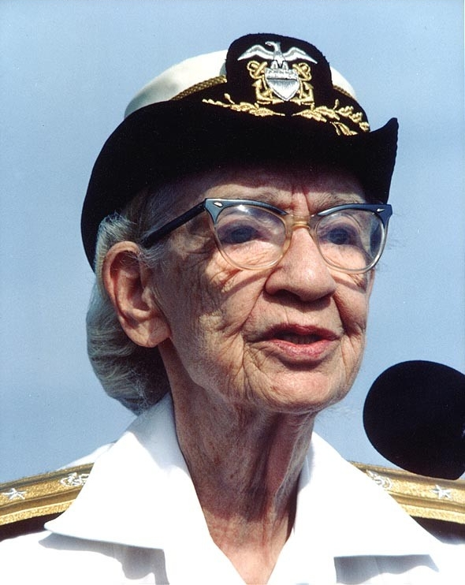
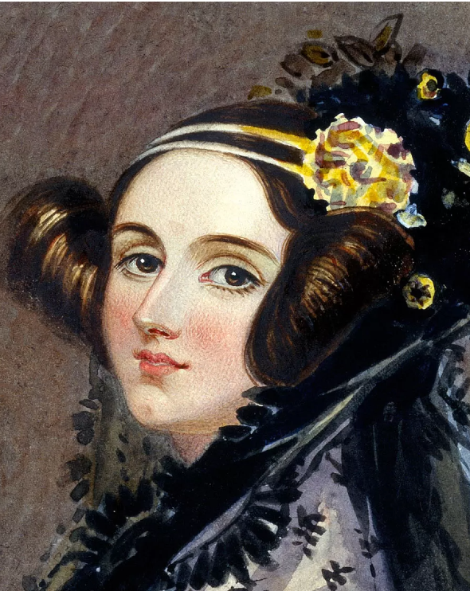
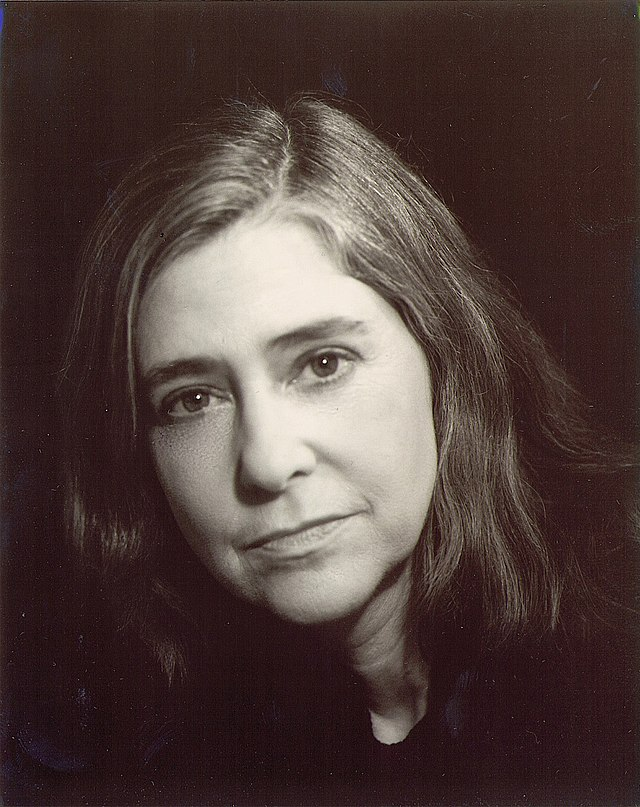
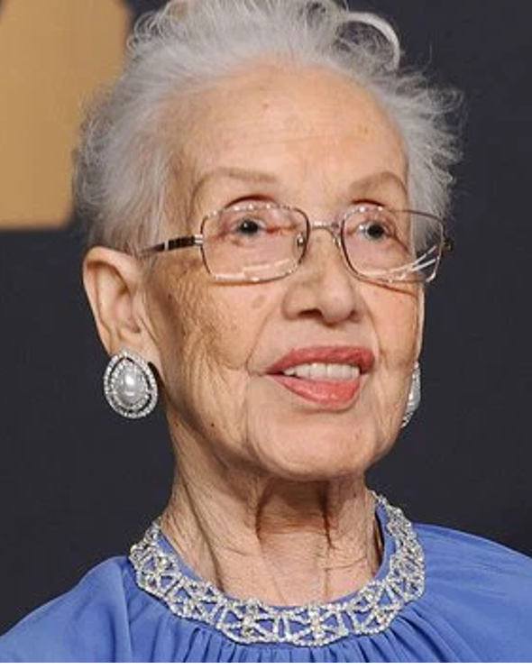
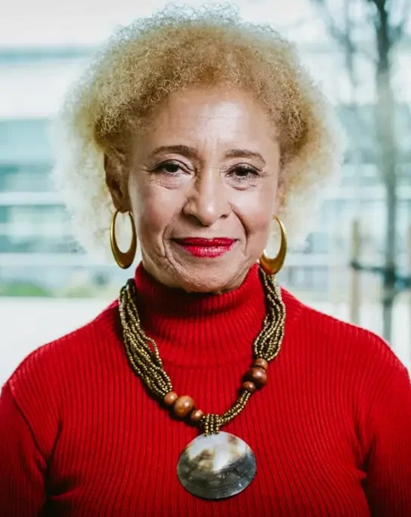

Grace Hopper
Criadora das primeiras linguagens computacionais “humanas”, que possibilitou a interpretação computacional de comando em inglês no lugar de apenas números e símbolos. Essa cientista incrível, ajudou na popularização da programação e abriu diversos caminhos para as linguagens computacionais utilizadas atualmente.
Ada Lovelace
Responsável por escrever aquele que veio a ser conhecido como o primeiro algoritmo de computador da história. Ela entra para a história como a primeira programadora, antes mesmo de os computadores serem inventados.
Margaret Hamilton
Publicou inúmeros artigos e relatórios e esteve envolvida em mais de 50 projetos ao longo de sua carreira. Foi dado destaque ao trabalho de desenvolvimento do software de voo da Apollo 11 da NASA
Katherine Johnshon
Responsável por escrever aquele que veio a ser conhecido como o primeiro algoritmo de computador da história. Ela entra para a história como a primeira programadora, antes mesmo de os computadores serem inventados.
Radia Perlman
Perlman, enquanto trabalhava na DEC em 1984, desenvolveu o protocolo Spanning Tree, crucial para a comunicação entre bridges em LANs, facilitando a identificação de uma bridge raiz em redes extensas.
Sônia Guimarães
foi a primeira mulher negra brasileira doutora em Física e primeira mulher negra brasileira a lecionar no ITA, tendo ingressado em 1993, quando a instituição ainda não aceitava mulheres como estudantes.
Ficou interessado na história dessas mulheres?
Baixe nosso app e saiba mais.